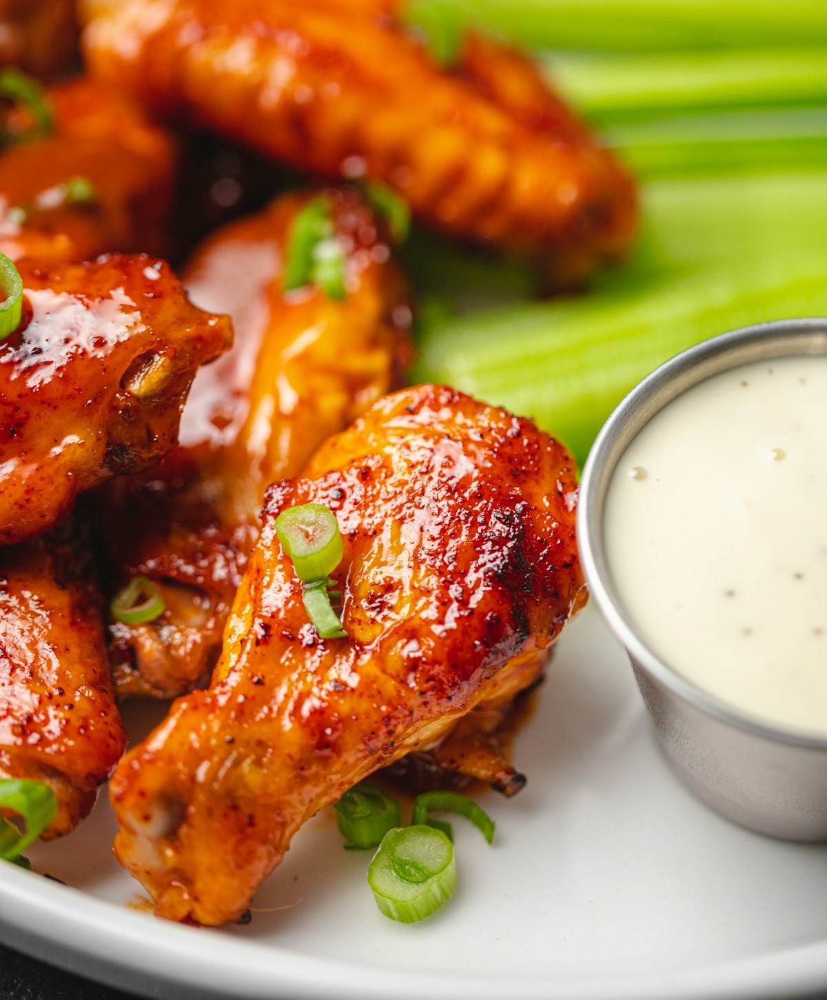

Banquete
familiar.
Piezas de pollo, acompañamientos y bebidas para poner al centro de la mesa.
Ver banquete ↗Pollo Campero · El Salvador
Tus favoritos, una buena conversación y un lugar más en la mesa. Así sabe un momento Campero.
POLLO · COMBOS · ACOMPAÑAMIENTOS

01 / Los favoritos
Piezas de pollo, acompañamientos y bebidas para poner al centro de la mesa.
Ver banquete ↗
El clásico
Pollo, papas y bebida. Una combinación para disfrutar a tu manera.
Ver el clásico ↗Selección del proyecto Guía 1. Consulta promociones y disponibilidad en el sitio oficial.
02 / Nuestra esencia
Hay momentos que empiezan con una invitación a comer. Pollo, familia y el gusto de reunirnos alrededor de la mesa salvadoreña.
La tradición Campero inspira esos encuentros: elegir nuestros favoritos, acercar un plato y hacer espacio para alguien más. Porque los buenos momentos también se sirven para compartir.
Conversemos ↗